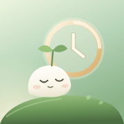
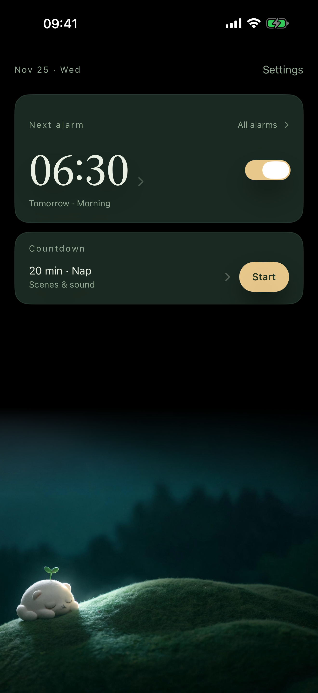
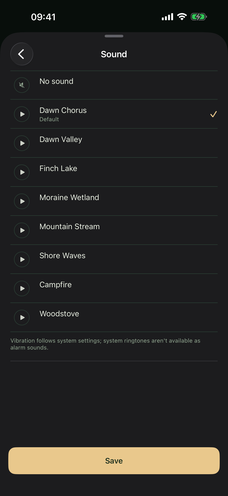
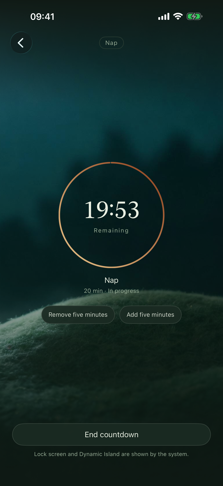
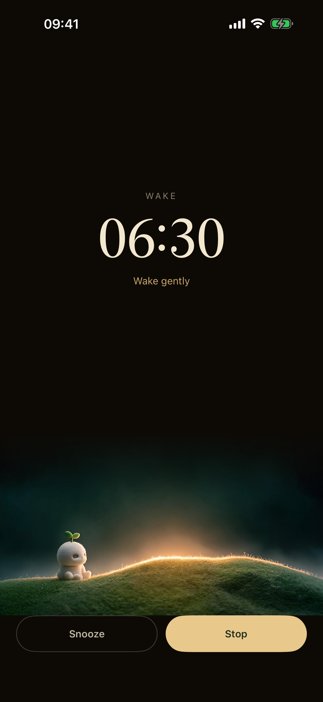

01
明早一眼看清Tomorrow, at a glance
时间、星期、用的声景，一张卡看完。其余闹钟按真实早晨分组：工作日、周末、只响一次。 Time, day and sound on one card. Other alarms follow real mornings: weekdays, weekends, or once.

苔在下面，光在上面iOS 26 · 自然声闹钟iOS 26 · Nature alarm
明早几点，一眼就知道。八条自然声景打包在 App 内，离线也能响。闹钟交给 iOS，App 关掉也不会漏。没有账号，没有广告，没有睡眠评分。 Tomorrow's alarm at a glance. Eight nature recordings bundled inside the app, playing offline. Alarms are handed to iOS, so they ring with the app closed. No account, no ads, no sleep scores.

只做三件事Three things
首页只放两件事：下一次闹钟，和一个倒计时。其余闹钟在下一层，不抢注意力。 The home screen holds two things: the next alarm and a countdown. Everything else stays one level down.
时间、星期、用的声景，一张卡看完。其余闹钟按真实早晨分组：工作日、周末、只响一次。 Time, day and sound on one card. Other alarms follow real mornings: weekdays, weekends, or once.
八条自然声景都打包在 App 里，飞行模式也能响。也可以选「无声音」，由系统设置决定是否震动。 Eight scenes ship inside the app and play in airplane mode. Choose No sound and let iOS decide about vibration.
泡茶、小睡、专注、敷面膜。常用时长存成一键圆圈，运行时只看一个进度环。 Tea, a nap, a focus block. Save the durations you use as one-tap circles and follow a single ring.

声音Sound
不依赖网络，不调用第三方服务。点一下可以试听，离开页面会自动停。 No network, no third-party service. Tap to preview; leaving the page stops it.
倒计时Countdown
常用时长存成一键圆圈：小睡 20、泡茶 4、专注 25、敷面膜 15、出门前 15、洗衣服 86、煲汤 45。中途可以加减五分钟，按早了还有几秒撤销。倒计时不会写进闹钟列表。 Save the durations you actually use. Add or remove five minutes mid-run, and undo if you end it too early. Countdowns never enter your alarm list.


夜里与清晨Night and morning
四档外观：跟随系统、深色、纯黑、浅色。三套色温：苔绿、暖米、灰蓝。纯黑在 OLED 上不发光，睡前看着不刺眼。没有连续天数，没有徽章，没有打卡。 Four appearances — System, Dark, Pure black, Light — and three colour temperatures. No streaks, no badges, no check-ins.
闹钟注册为 iOS 系统闹钟，App 关掉也会响。响铃界面、稍后提醒与停止由系统负责；离开那个界面，声音会停，这是 iOS 的规则。 Alarms are registered with iOS, so they ring even when the app is closed. The alert screen, snooze and stop belong to the system; leaving that screen ends the ring.
界面Screens
价格Price
US$0
全部功能开放：所有外观、所有声景、所有闹钟。Everything open: every appearance, every scene, every alarm.
US$4.99
一次买断，永久使用。价格以 App Store 本地显示为准。One-time purchase, yours for good. Local price shown on the App Store.
隐私Privacy
没有登录，没有统计 SDK，没有广告 SDK。核心功能不联网，闹钟数据只存在这台设备上。购买与恢复由 Apple 处理，我们不接触你的支付信息。 No sign-in, no analytics SDK, no ad SDK. Core features work without a network, and your alarms stay on this device. Purchases are handled by Apple; we never see your payment details.
会。每条闹钟都注册为 iOS 系统闹钟，App 退到后台或被关闭后仍由系统负责响铃。若在系统设置里撤销了闹钟权限，重新打开 App 即可重新注册。 Yes. Each alarm is registered as a system alarm with iOS, so it rings after the app is closed. If alarm permission is revoked, open the app again to re-register.
iOS 不允许第三方闹钟使用系统铃声，也没有开放单独的震动接口。选择「无声音」时，是否震动由系统的声音与触感设置决定。 iOS does not allow third-party alarm apps to use system ringtones, and exposes no separate vibration API. With No sound selected, vibration follows your system settings.
试用计时保存在本机，重装后会重新计算。已购买的用户在设置页点「恢复购买」，用同一个 Apple ID 即可恢复。 The trial timer is stored on the device and starts again after reinstalling. If you already purchased, tap Restore Purchases in Settings with the same Apple ID.
iOS 26 及以上，iPhone 11 及更新机型。闹钟依赖系统的 AlarmKit，旧系统无法运行。 iOS 26 or later on iPhone 11 and newer. Alarms rely on AlarmKit, which older systems do not provide.
目前只有 iOS。闹钟依赖系统能力，安卓需要另做一套实现，暂时没有排期。 iOS only for now. The alarm relies on system APIs; Android would need a separate implementation.